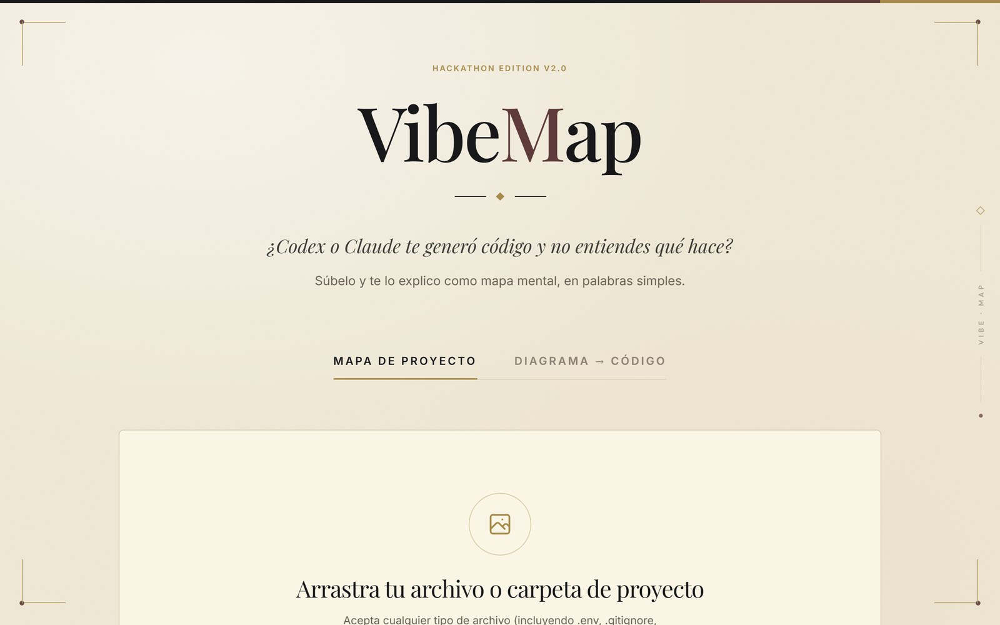
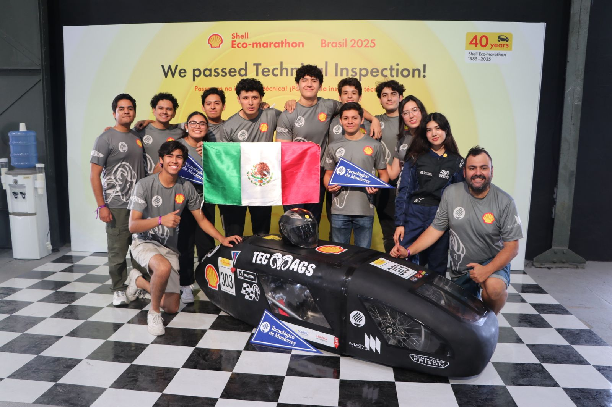
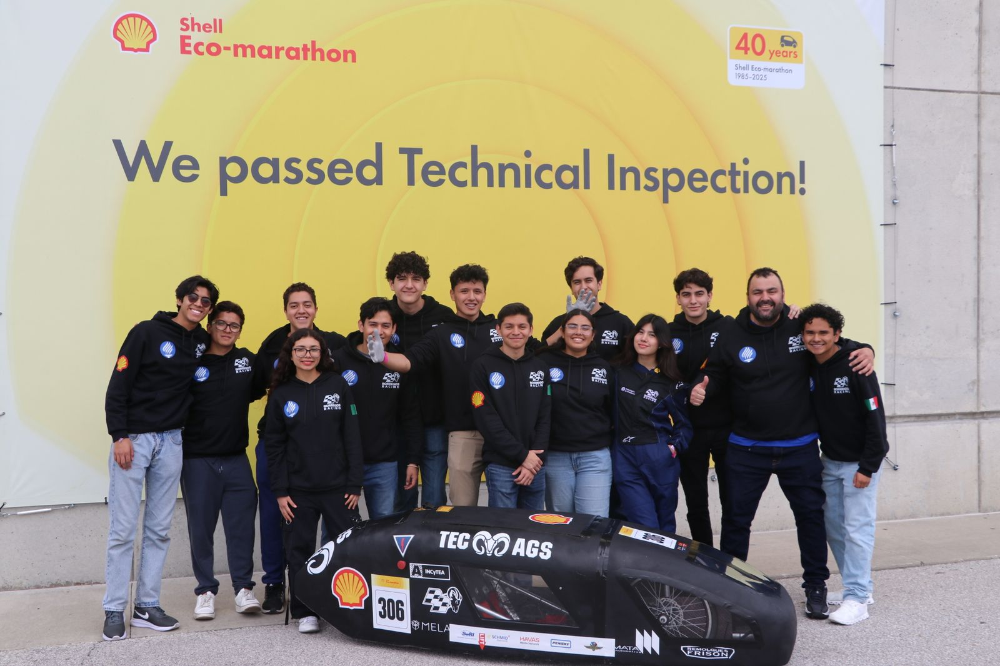
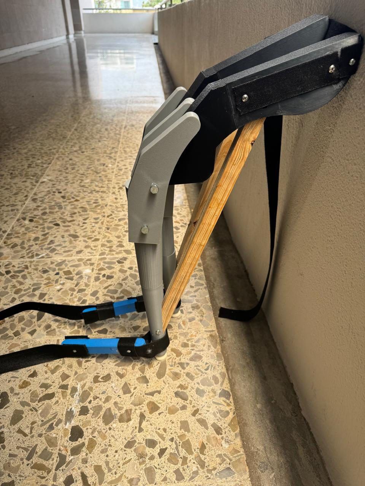
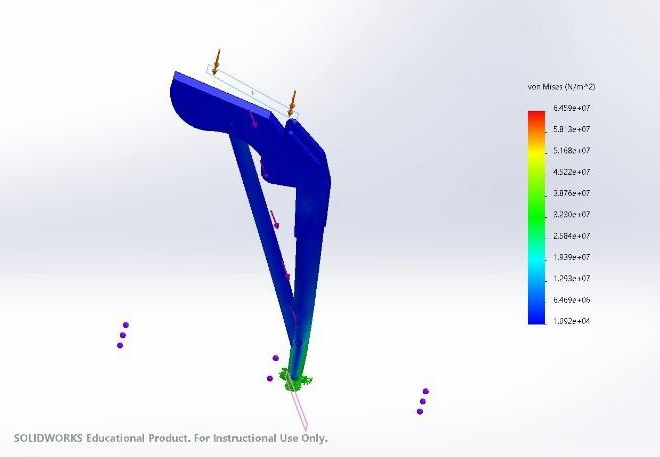
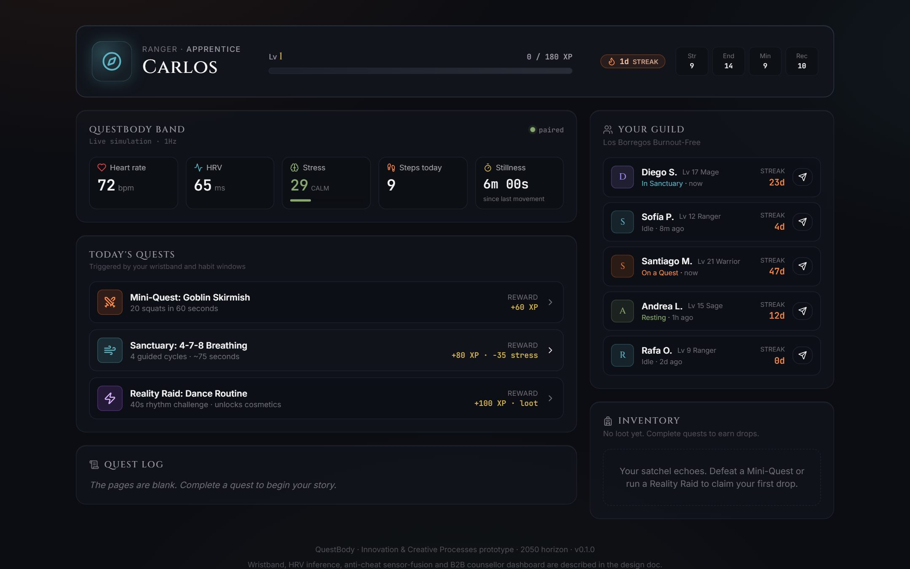
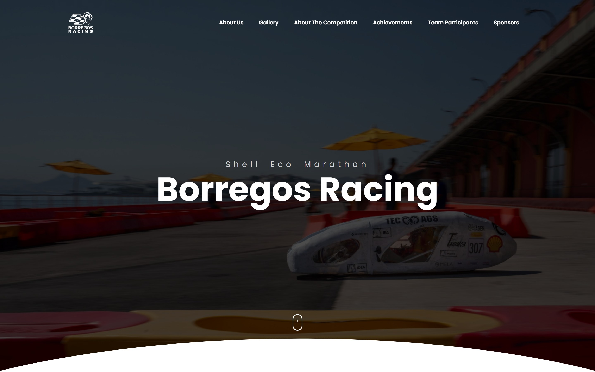

VibeMap
Drop in a project folder and get an interactive architecture map, so you can understand AI-generated code instead of copy-pasting it. Built in 8 hours with React, TypeScript, Gemini and Mermaid.js.
Source on GitHubCarlos Velasco. Mechatronics engineering student at Tec de Monterrey, currently building an AI agent at Mostla.
Move your cursor. The dog turns to watch it while all four feet stay planted: every leg is solved with inverse kinematics, live. Click and it waves.
A walking robot is where mechanical design, power, sensing, control and software meet. This is how my work lines up on one.
Unitree Go2, the robot dog I'm about to start programming at Mostla. Model from Google DeepMind's MuJoCo Menagerie, BSD-3-Clause, © Unitree Robotics.
CAD, FEA and 3D printing. My exoskeleton went from SolidWorks to a prototype I wore on campus.
Energy systems for Borregos Racing, second place twice at Shell Eco-marathon 2025.
Where a foot meets the ground. At SHIELD I analyze Vicon motion capture and Tekscan pressure data in Python.
Each joint is a motor with an encoder. On STM32 and Arduino I work with encoders, interrupts and H-bridges.
At Mostla, an AI agent that only keeps answers it can back with an exact quote.
Each card is something I built. Spin the sphere and click a card to open that project.
Mostla, Tec de Monterrey, since August 2026
As an Agentic AI Engineer Intern I'm building an agent that classifies company information. Every answer has to come with an exact quote from its source, and a deterministic verifier checks that quote before anything gets saved. No quote, no answer.
Python, web scraping, REST APIs, LLM tools, evaluation sets, tests.
Source text
The frame was modeled in SolidWorks and checked with a static study with a 750 N load. The result was a 64.59 MPa peak von Mises stress, below the 276 MPa yield strength of aluminum 6061-T6. The printed prototype was tested by wearing it around campus.
Model answers
a static study with a 750 N load
the carbon fiber frame
64.59 MPa peak von Mises stress, below the 276 MPa yield strength
tested outdoors on campus
A simplified demo with my own exoskeleton notes as the source. Not Mostla data.
Same rule, pointed at me
Ask anything about my work. Claude answers only from a short knowledge base about me, and every claim has to point to a quote. A verifier checks each quote before you see it.
Hi. Ask me about Carlos's projects, experience or skills, in English or Spanish.
Borregos Racing, February to December 2025
Shell Eco-marathon 2025, Prototype Battery-Electric. I worked on energy-systems optimization and subsystem integration, and built the team's website.



Move your cursor over the drawingCourse project, 2026
A passive exoskeleton that locks at the knee and sends your weight to the floor, so you can sit down anywhere. I did the concept, the SolidWorks model, the FEA, the 3D printing and the assembly.
A buckling study puts the first mode at about 300 times the design load.


Team project, 2026
A wristband concept with a working web prototype: a simulated 1 Hz biometric feed (heart rate, HRV, stress, stillness) triggers RPG quests, XP and loot in real time. Team of three; I built the interactive demo and the financial model.

Drop in a project folder and get an interactive architecture map, so you can understand AI-generated code instead of copy-pasting it. Built in 8 hours with React, TypeScript, Gemini and Mermaid.js.
Source on GitHub
The racing team's website, written from scratch in HTML, CSS and JavaScript.
Three clinic operations running at once, modeled with stochastic arrival and service data to find the bottlenecks and improve patient flow.
Built in 2026
I built it with Claude Code as an AI pair programmer. I set the direction and the content, checked every fact and reviewed every screen; the agent wrote much of the code. Directing an AI agent well is a skill I use every day at Mostla.
The Go2 comes from DeepMind's MuJoCo Menagerie. A Python script rebuilds its joint tree as glTF and compresses it from 11.4 MB.
Analytic inverse kinematics for each leg, within the real joint limits, every frame in the browser, with a test that checks it against the model.
Measured while scrolling at 2x resolution on integrated graphics. No build step: plain HTML, CSS and JavaScript.
Everything the question box can say comes from a knowledge base I wrote and checked.
I studied medicine for two years before switching to mechatronics. I still find the human body fascinating, so a lot of my work ends up close to it: an exoskeleton you wear, a wristband that reads your heart rate, motion-capture research. The rest is software, which is the part I enjoy most.
Aug 2026 to now
Python data pipeline with web scraping and REST APIs, custom tools and an AI skill for the language model, the quote verifier, evaluation sets, tests and on-premise model deployment.
2025 to now
Python pipelines for Vicon motion capture and Tekscan pressure data in a study on bowling-throw mechanics: cleaning raw exports, filtering off-sensor frames and fitting 95% confidence ellipses to center-of-force paths across nine trials.
Feb to Dec 2025
Energy-systems optimization and subsystem integration under international safety and technical rules.
2024 to 2028
GPA 93.67/100. Programming, mechatronic integration, AC circuits, process simulation, differential equations.
Python (NumPy, Pandas, Matplotlib, scikit-learn), C and C++, JavaScript, TypeScript, React, MATLAB, Git, Linux.
LLM and API integration, AI agents with custom tools, evaluation sets and grounded answers, deep learning fundamentals, data analysis.
STM32 and Arduino, sensors and instrumentation, SolidWorks CAD and FEA, 3D printing, soldering, mill and lathe, Vicon and Tekscan.
Open to internships and part-time roles in software, AI and robotics.
vmcarlos024@gmail.com